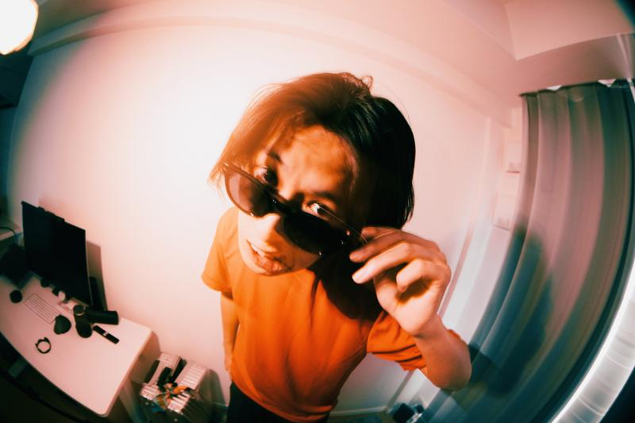

02 — GAMES
KAZUSORA GAMES
ブラウザを開くだけで遊べるミニゲーム。インストールも登録もいりません。スマホでもパソコンでも。
LATEST 落下点 センターに次々と打ち上がるフライを、走って、飛びこんで捕り続けるノックゲーム。何回連続で捕れるか。03 — APPS
アプリ
iPhone のアプリ。App Store で配信しています（配信元: 株式会社チケミー）。
04 — PROFILE
詫摩一空

フェスやクラブ、チケットの現場では、毎日なにかが起きています。当事者から直接聞いて短い映像にして残し、 その一本がどこまで届いたのかを数字で追いかける。最近は、ゲームやアプリも自分の手でつくっています。
05 — CONTACT
つながる
取材・出演・お仕事のご相談は、メールか各 SNS から。